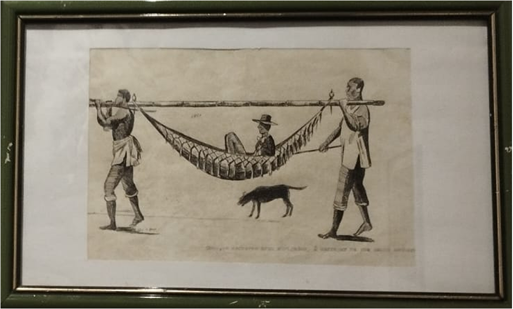

MUSEU MUNICIPAL FRANCISCO COELHO
PINTURAS
Marabá: capital do bico de pena

Este município tornou-se referência nacional e internacional por meio da técnica do bico de pena, na qual Marabá é destaque. Por muito tempo, dois irmãos deram nome à técnica marabaense: Augusto e Pedro, um já falecido, o outro mora fora da cidade, mas todos os anos se reúne com a família para celebrar essa técnica milenar que surgiu a cerca de mil anos na China.
Técnica: Bico de pena
Autor: Desconhecido
Augusto e Pedro já faleceram mas essa técnica continua viva em Marabá pelas mãos de Domingos Nunes, Rildo Brasil, Antônio Morbach, Walney Oliveira, Ronaldo Pimentel, Barros e Milhomem, Wendas Silva, entre outros...
Domingos Nunes
obras que relatam o cotidiano dos escravos
O artista, atualmente mora na Velha
Marabá, próximo ao museu.
QUER CONHECER MAIS PINTURAS
COMO ESSAS?
Venha ver de perto e nos faça uma visita!